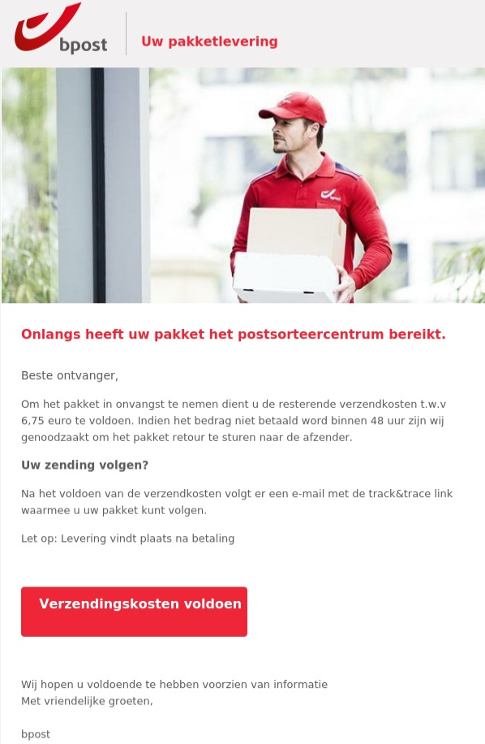

Phishing is oplichting via nep-e-amils. Aanvallers doen zich voor als een bank om wachtwoordente stelen.
Phishingmails bevatten vaak subtiele fouten: een vreemd e-mailadres, een link die niet klopt, of taaflouten in de tekst. Ze spelen in op urgentie - "Uw rekening word geblokkeerd!" - om je snel te laten handelen.
Verander onmiddellijk al je wachtwoorden en schakel tweefactorauthenticatie in. Meld het ook bij het Centrum voor Cybersecurity België.